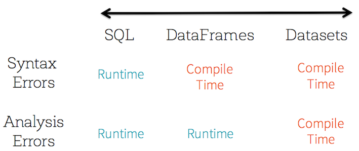
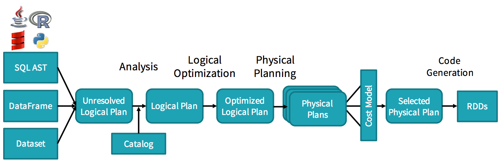
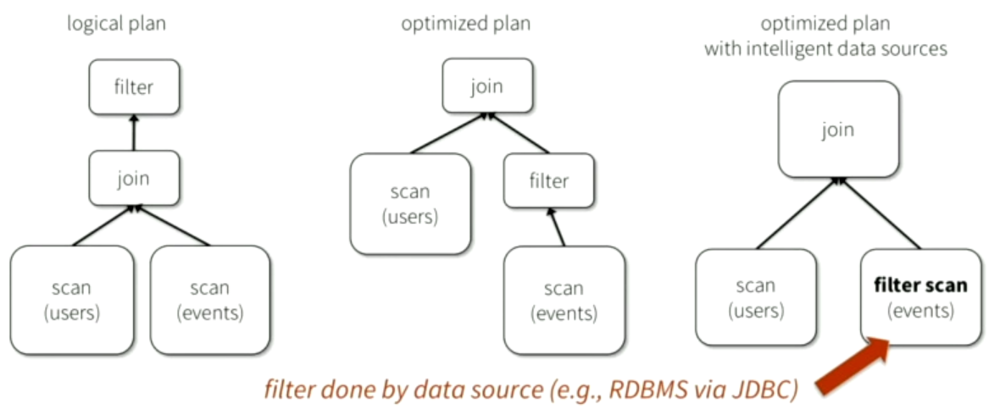
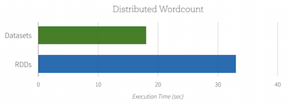
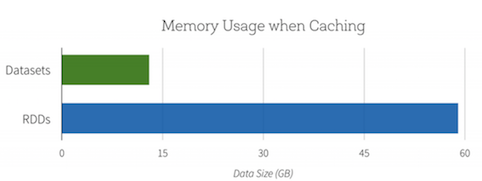
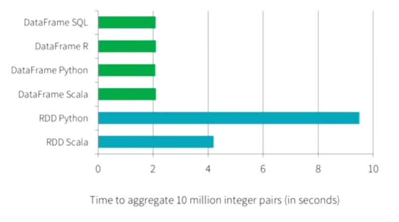
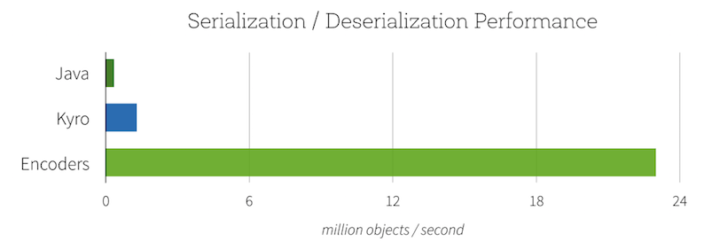
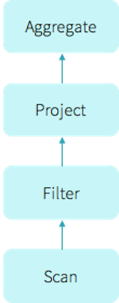
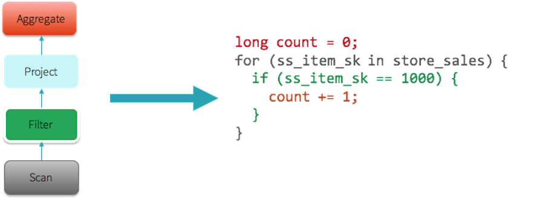
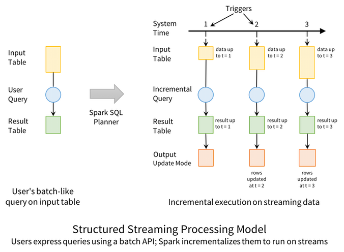

Spark 2.0
Presentation by Samuel Durand
Today we will talk about...
- What is Spark ?
- What's new in Spark 2.0
- Most interesting features
- Future
- Demo
Apache Spark
Created in 2009 by Matei Zaharia
Maintained since 2013 by the Apache Foundation
Version 2.0 released in June 2016
One of the most active Apache project
What is Spark ?
Advertised as "A fast and general engine for large-scale data processing"
A data processing platform, running on a cluster
Designed to handle very large amount of archived or live data very quickly and efficiently.
What is Spark ?
- Designed for analytical and transformation operations
- Little amount of code required to use it
- Available in Scala, Java, Python and R
- Handle data in memory for speed
- Can work on very large cluster (> 8000 nodes)
Features
- Data analysis of large amount of data
- Manipulation of RDDs by Scala like code
or SQL queries - Live data streaming
- Machine Learning
- APIs for many datasources
(HDFS, Cassandra, Kafka...)
Spark Ecosystem

What it looks like
val rdd = sparkContext.textFile("hdfs://...")
rdd.flatMap(line => line.split(" "))
.map(word => (word, 1))
.reduceByKey(_ + _)
.saveAsTextFile("hdfs://...")
val data = Array("Spark has potential",
"Storm is not bad either",
"Scala is the best for Spark !")
val rdd = data.parallelize(data)
val strWithSpark = rdd.filter(line => line.contains("Spark"))
// Cache the RDD in memory for later use
strWithSpark.cache
strWithSpark.forEach(println)
A note on Databricks
Founded by Matei Zaharia and other co-founders of Spark
Provides services and support for Spark
Also offers an online platform for experimenting/training (free option since June 2016)
Spark 2 : What's new ?
- Clear focus on Datasets/Dataframes instead of RDDs
- Structured Streaming
- SparkSession : single entry point to data APIs
- SparkSQL : all 99 TPC-DS queries
- Performance improvements : Tungsten
- Spark.ML replaces MLlib
- Event time window functions on streaming
- Many more : CSV support, more features for R users...
RDDs VS Datasets
Better performances for less efforts
Resilient Distributed Dataset (RDD)
- Immutable distributed collection of Objects
- Unstructured data
- Functional programming
- Syntax errors caught at compile time
- Limited optimizations
- More control over operations
val lines = sc.textFile("data.txt")
val total = lines.map(s => s.length)
.reduce((a, b) => a + b)
Dataframes
- A distributed collection of data organized into named columns
- Equivalent to a table in a relational database
- Handles structured data, can infer the schema
- Higher abstraction on top of RDDs, less control
- Designed to simplify the tasks of users
- Optimization and code generation : Spark SQL Catalyst
- In Spark 2, only a subtype of Datasets
Datasets
- Immutable distributed collection of Objects
- Abstraction on top of Dataframe : structured data
- 3 APIs available : SQL, Dataframe, Dataset
- Type safe : operate on domain objects with DSL or lambda functions
- Syntax and analysis errors caught at compile time
- Structure limits what can be done :
Storage and performance optimizations
Structured APIs
SQL
val peopleDF = spark.read.json("people.json")
peopleDF.createOrReplaceTempView("people")
spark.sql("SELECT name FROM people").show()
Dataframes = Dataset[Row]
val peopleDF = spark.read.json("people.json")
peopleDF.select($"name", ($"age" < 25).as("young"))
.orderBy($"young".desc, $"name").show()
Datasets
val personDS = spark.read.json("people.json").as[Person]
personDs.foreach(p => println(s"| ${p.name} | ${p.age + 1} |"))
Structured APIs
Analysis errors caught before job starts
case class University(numStudents: Int)
val schools = sqlContext.read.json("/schools.json").as[University]
org.....AnalysisException:
Cannot upcast `numStudents` from string to int as it may truncate
Better performances ?
Catalyst : Query planner
Decides the best way to perform a query by trying several possibilities
Catalyst : Query planner
Optimizations
Better performances with relational execution engine
Spark knows structure of data : it can optimize storage
Optimizations
Same performances for all languages
Optimizations
Serialized using Encoders into Tungsten binary format
Far better performances with less space (up to 2x less)
Operate Directly On Serialized Data when possible
Optimizations
Spark works only with a limited number of types
=> can use its own compact encoding
Encoders translate between domain objects and Spark's internal format
SparkSession
A unique entry point to all APIs
Before
SparkContext : RDD Api
val conf = new SparkConf().setAppName("Spark App")
.setMaster("local[2]")
val sc = new SparkContext(conf)
SqlContext : Dataframe Api
val sqlContext = new org.apache.spark.sql.SQLContext(sc)
and Hive compatibility
val hContext = new org.apache.spark.sql.hive.HiveContext(sc)
Problems
Confusion between SqlContext and HiveContext : which one to choose ?
Heavy dependence on Hive especially for window functions
Hive has lots of dependencies
In Spark 2
val spark = SparkSession.builder.master("local[2]")
.appName("Spark app")
.getOrCreate()
val personsDF = spark.read.json("persons.json")
val personsDS = personsDF.as[Person]
The SparkContext is also available
val sc = spark.sparkContext
But... still dependent on Hive
Tungsten 2nd generation
What is Tungsten ?
Project aiming to improve the efficiency of memory and CPU for Spark applications.
- Memory : eliminate the overhead of JVM object model
- Find ways around the limitations of garbage collection
- Cache-aware computation: exploit memory hierarchy
- Improve bytecode generation to exploit modern compilers and CPUs
Tungsten 2nd Generation
Introduce a new mechanism : whole-stage code generation
Emits optimized bytecode at runtime that collapses the entire query into a single function
- Eliminates virtual function calls
- Uses CPU registers for intermediate data
Volcano Iterator Model
A query consists of multiple operators, and each operator presents an interface, next()
select count(*) from store_sales
where ss_item_sk = 1000
- Process any combination of operations
- No concerns on the type of data
Compared with hand-written code ?
var count = 0
for (ss_item_sk in store_sales) {
if (ss_item_sk == 1000) {
count += 1
}
}
Why such a difference ?
- No virtual function calls
- No need to save data in memory
- CPUs are incredibly efficient when handling for loops
Whole-stage code generation
Performances
| Primitive | Spark 1.6 | Spark 2.0 |
| filter | 15 ns | 1.1 ns |
| sum | 14 ns | 0.9 ns |
| hash join | 115 ns | 4.0 ns |
| sort | 620 ns | 5.3 ns |
Structured Streaming
The simplest way to perform streaming analytics is not having to reason about streaming.
Structured Streaming in Spark 2
- Equivalent to a batch job at regular interval
- API identical in usage to Datasets APIs
- Guarantee the events processing and delivery order
- Fault tolerance is handled entirely by API
- Capable to filter out or handle out-of-order data
- Allow to join a stream against a static DataFrame
- Change queries at runtime
Identical API
Basic dataframe processing
val inputDF = spark.read.json("s3://logs")
// Do operations using the standard DataFrame API and write to MySQL
inputDF.groupBy($"action", window($"time", "1 hour")).count()
.write.format("jdbc")
.save("jdbc:mysql//...")
With structured streaming
val inputDF = spark.readStream.json("s3://logs")
// Do operations using the standard DataFrame API and write to MySQL
inputDF.groupBy($"action", window($"time", "1 hour")).count()
.writeStream.format("jdbc")
.start("jdbc:mysql//...")
Joining Streams with static data
// Bring in data about each customers from a static table,
// then join it with a streaming Dataframe
val customersDF = spark.table("customers")
inputStreamDF.join(customersDF, "customer_id")
.groupBy($"customer_name", hour($"time"))
.count()
Unbounded table

Incrementalization
Converts the batch-like query to a streaming execution plan
Ouput modes
There is 3 ways to write the results of a stream processing
- Append : write only the new rows to the result table
- Complete : write entire result table each time
- Update : write only updated rows in the result table
Fault tolerance
Spark impose two requirements on datasources to guarantee fault tolerance
- Input sources must be replayable, so that recent data can be re-read if the job crashes
- Output sinks must support transactional updates, so that the system can make a set of records appear atomically
Not yet supported
- Limit and take first N rows
- Distinct operations
- Sorting operations limited
- Limited outer joins between streamed and static data
- No support for joining streams
Future
- More sources/sinks for Structured Streaming
- Coverage of all SQL 2003 queries
- Improve Datasets APIs performances
- Focus on Spark.ML
- Add missing features to Python and R